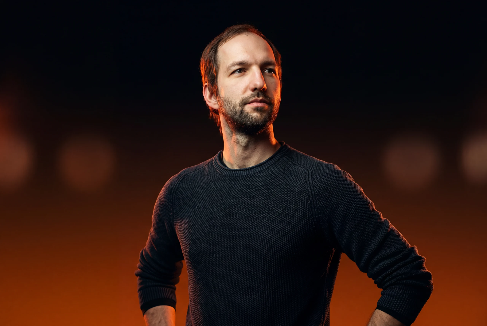
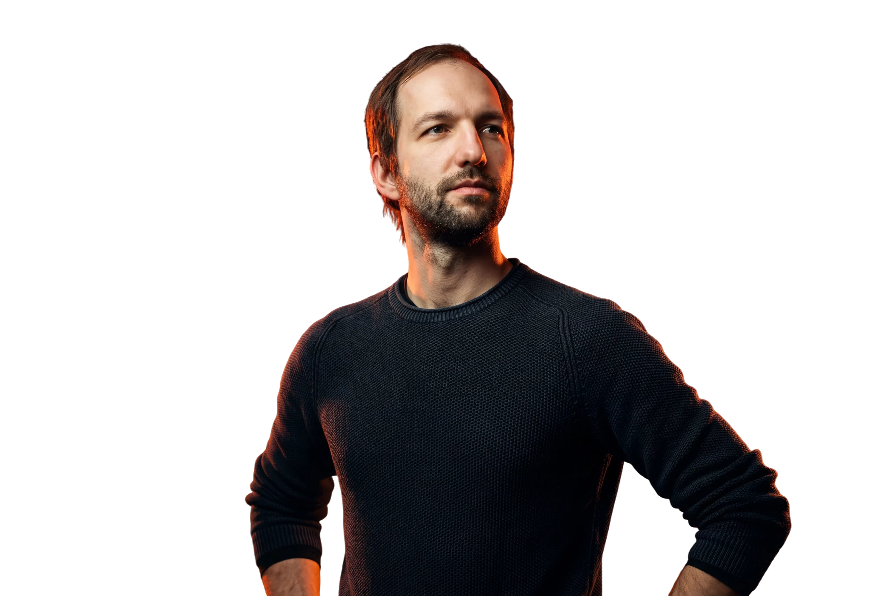
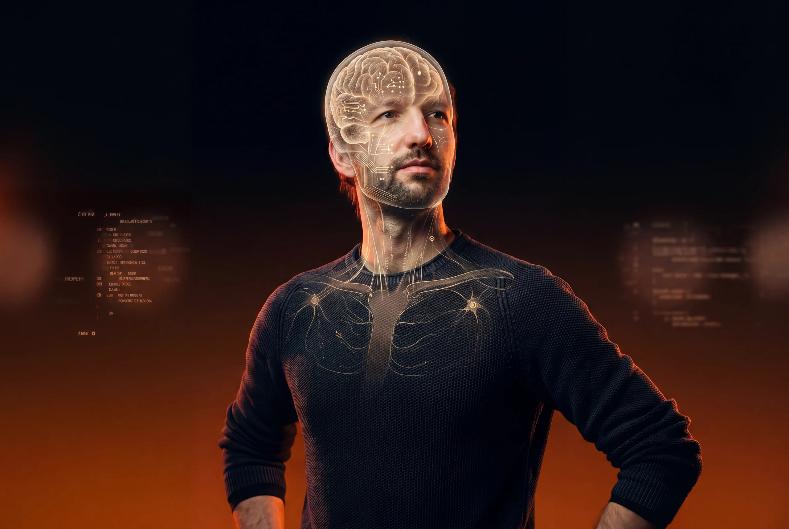
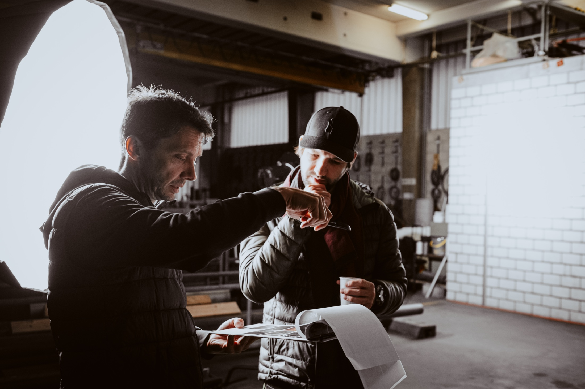
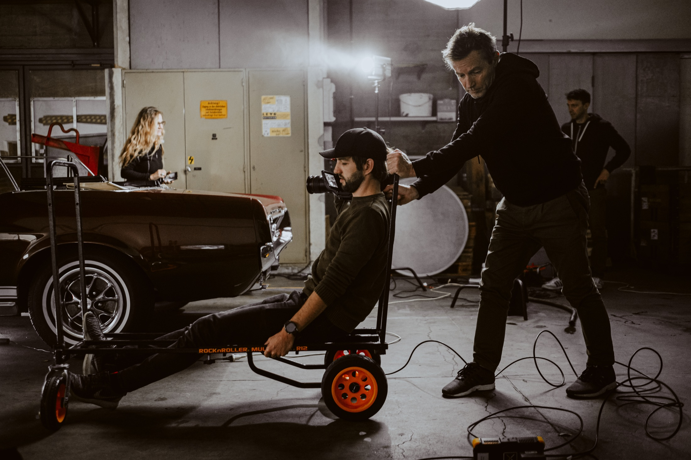
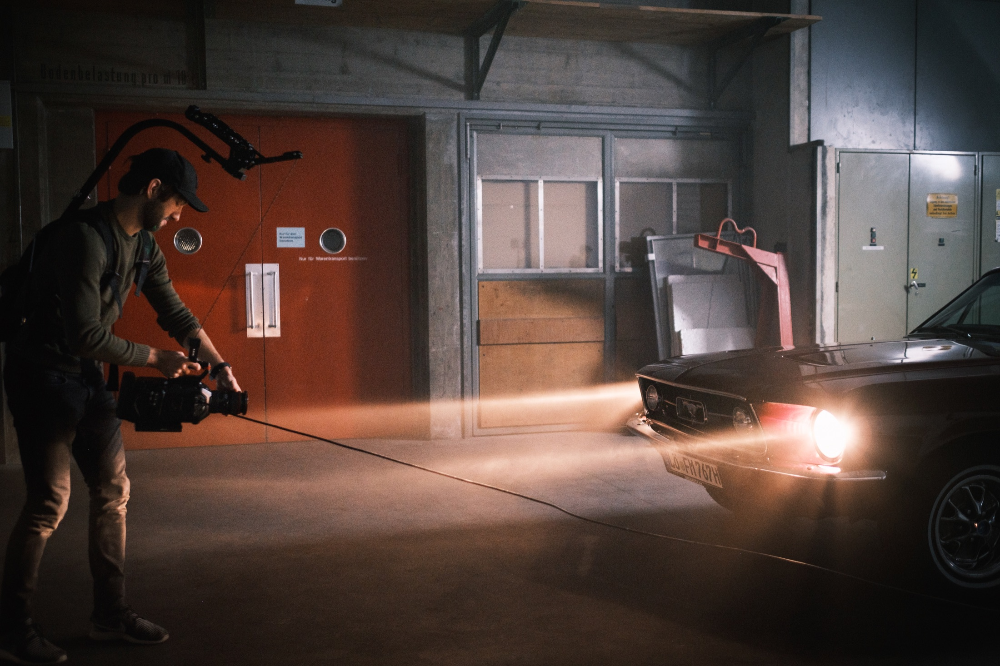
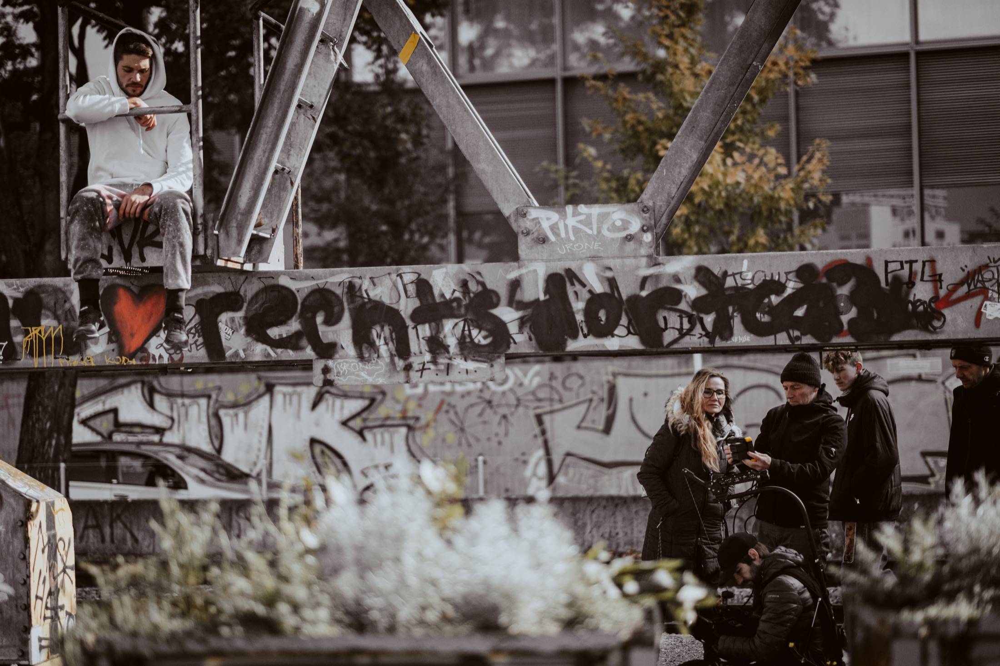

Video-Producer / Film-Producer
Europa-Park / MackMedia, Rust. Entertainment, Markenfilm, Kampagnen und visuelle Entwicklung.



Regisseur · Fotograf · DoP · Art Director
Andreas Boehler entwickelt visuelle Geschichten für Marken, Entertainment, Healthcare und Menschen, die mehr brauchen als schöne Bilder.
Andreas Boehler ist ein deutscher multidisziplinärer Filmemacher, Fotograf, DoP und Art Director. Geboren und aufgewachsen in Deutschland arbeitet er im Raum Freiburg/Basel und verbindet konzeptionelles Denken mit filmischem Handwerk.
Seit rund 15 Jahren entwickelt er beruflich Video-Konzepte, visuelle Systeme und Kampagnen für die analoge und digitale Welt. Seine Arbeit bewegt sich zwischen Werbefilm, Markenfotografie, Entertainment-Produktion, Healthcare-Kommunikation, Postproduktion, KI-Workflows und Art Direction.
Durch Stationen bei Agenturen, Produktionen und Europa-Park / MackMedia entstand ein Profil, das kreative Führung, technische Präzision und ein Gespür für Storytelling zusammenführt.





Was mit einem gescheiterten Ausflug in die Softwareentwicklung begann, wurde zur Grundlage für eine vielseitige Karriere in der deutschsprachigen Kreativbranche. Mit 16 Jahren begann Andreas, sich Design und Fotografie autodidaktisch beizubringen, angetrieben von Neugier und dem unbedingten Willen, Dinge selbst zu gestalten. Dieser Antrieb führte ihn zu einem Studium in München und Basel.
Die Kombination aus gestalterischer Präzision und technischem Verständnis ebnete ihm den Weg in die Werbewirtschaft. Er sammelte Erfahrungen in renommierten Agenturen in Freiburg und Basel, bevor er sich sukzessive in Richtung Film und Bewegtbild entwickelte. Heute führt er Projekte mit Budgets im sechsstelligen Bereich, leitet interdisziplinäre Teams mit bis zu 40 Personen und arbeitet mit Kameras von RED und ARRI.
Seine Arbeiten haben ihn mit Unternehmen wie Adobe, BMW, Roche, Novartis, Basilea, Clariant, Schwarzwaldmilch und Messe Basel (MCH) zusammengebracht. Zu seinen bekanntesten Projekten zählen der Tour-Trailer für die Welttournee von DJ BoBo, die Produktionsleitung des preisgekrönten Imagefilms Energize Communications sowie der TV-Werbespot zur Achterbahn Voltron Nevera im Europa-Park.
Seine Filme wurden auf renommierten Festivals in New York, Los Angeles, Berlin, Paris und Barcelona ausgezeichnet, darunter Preise für Best Commercial, Best Director und Best Visual Effects.
Europa-Park / MackMedia, Rust. Entertainment, Markenfilm, Kampagnen und visuelle Entwicklung.
X-Ray / The Bloc Switzerland, Basel. Filmproduktion, Art Direction, Teamführung und Kundenprojekte.
X-Site, Basel. Digitale Konzepte, UX-nahe Gestaltung und crossmediale Kampagnen.
X-Ray, Basel und Agentur Kiesewetter, Freiburg.
Studium in München und Basel.
Jurymitglied COMPRIX Award Digital und Ausbildung in Interactive Media Design.

Andreas Boehler hat bereits für zahlreiche Marken aus Entertainment, Healthcare, Industrie, Food, Hospitality, Interior, Beauty, Consumer, Business und Digital gearbeitet - in Projekten, bei denen Bild, Film und Strategie zusammenkommen.
Europa-ParkMackMediaRulanticaEatrenalinYULLBE GOSAT.1Warner Bros.DJ BoBoVoltron Nevera
RocheNovartisPfizerAstraZenecaMSDAbbVieAcinoUniklinikum FreiburgBasileaActelionBoehringer IngelheimGalderma SpirigOctapharmaMovicol
ClariantSyngentaBachemARCONDISHuntsmanSONGWONineltecSMT
AmmoliteFol EpiChavrouxTartareCaprice des DieuxSaint AlbrayCoopWaldhausPiù Caffè ProfessionalSchwarzwaldmilchBongrain / Savencia
BeiersdorfNiveaWeledaPulpo
AdobeBMWDufryLexwareMesse Basel (MCH)MOVIN
Film, Fotografie, Kamera, Art Direction und KI sind die sichtbaren Servicebereiche. Darunter liegen viele Fähigkeiten, die Projekte schneller, präziser und visueller machen.
Ein starkes Bild beginnt nicht bei der Oberfläche, sondern bei dem Moment, der hängen bleibt: Timing, Haltung, Licht und eine klare emotionale Richtung.
Der Look darf mutig sein, aber er muss der Geschichte dienen. Jede visuelle Entscheidung soll erklären, verdichten oder emotional öffnen.
Gute Projekte brauchen ehrliche Einschätzungen, transparente Entscheidungen und eine Sprache, die Auftraggebende, Teams und Marken zusammenbringt.
RED, KI, Virtual Production, 3D oder klassische Kameraarbeit werden eingesetzt, wenn sie Wirkung, Geschwindigkeit oder Präzision wirklich verbessern.
Ob Healthcare, Entertainment, Industrie oder Lifestyle: Marken werden stärker, wenn man die Menschen dahinter ernst nimmt und nicht glattbügelt.
Eine Idee ist erst fertig, wenn Konzept, Set, Schnitt, Sound, Color und Ausspielung dieselbe Richtung haben. Begeisterung zeigt sich im Durchziehen.
Neue Workflows, ungewohnte Perspektiven und saubere Experimente halten die Arbeit beweglich, ohne den Kern des Projekts aus dem Blick zu verlieren.
Die Auswahl zeigt nicht nur einzelne Preise, sondern die Breite der Arbeit: Konzept, Produktion, Kamera, Schnitt, Sound und visuelle Umsetzung.
Best Commercial · Best Director Short Film · Best Production Short Film · Special Mention Cinematography · Third Audience Award
Best Editing · Best Sound Design · Best Visual Effects · Best Sound · Best Editing in a Short Film
Best Cinematography · Best Commercial / Promotional Video · Award of Excellence beim Best Shorts Competition
Berlin Indie Film Festival · Los Angeles Film Awards · New York Cinematography Awards · Paris Film Festival · South Cinematography Academy Film & Arts · Barcelona Planet Film Festival
Bachelorausstellung, München.
Masterausstellung, Hochschule für Gestaltung, Basel.
Videokunst in Basel, gemeinsam mit Christoph Göttel.
Videokunst in Bad Säckingen und fotografische Perspektiven im Lorettokrankenhaus Freiburg.
Fotoausstellung bei movinammooswald, Freiburg.
Kajo-Frisöre, Freiburg. Fotoimpressionen aus Asien, USA, Europa und Afrika.
Uniklinik Freiburg, fotografische Stadtimpressionen.